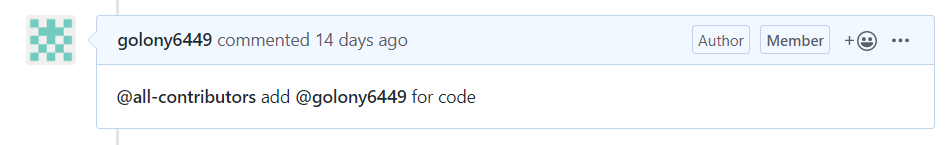
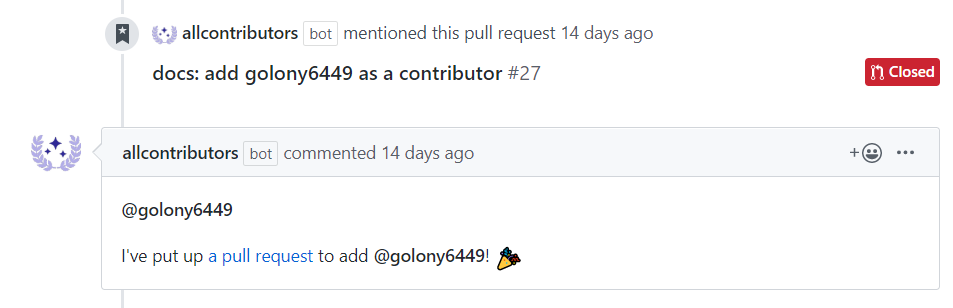

스크립트 오탈자 수정 방법과 수정 내용의 반영
파이콘 한국은 보다 많은 분들이 참여할 수 있는 행사가 되기 위해 2018년부터 문자통역을 제공하고 있습니다. 또한, 이때 만들어진 스크립트를 기반으로 Youtube에 업로드된 발표 영상에 자막으로 추가하는 작업을 진행 중입니다.
발표 스크립트를 편집하고, 영상에 자막을 첨부하는 작업은 많은 시간이 필요한 작업이고 여러분들의 도움을 필요로 합니다.
스크립트의 오탈자를 수정하는 방법
아래의 Github 저장소를 참고 해주세요.
수정된 내용들을 반영하기
기여자분들께서 기여해 주신 내용과 보내주신 PR은 파이콘 한국 준비위원회에서 검토한 다음 반영합니다. 이때 중점적으로 확인하는 부분은 다음과 같습니다.
- PR 템플릿에 기재된 항목
- PR(Pull Request) 전에 이슈를 먼저 생성해주세요.
- 중복된 PR이 없는지 확인해주세요.
- 적절한 파일 제목을 입력해주세요. 빠른 반영에 큰 도움이 됩니다.
- 파일 이름이 변경되지 않았는지 확인해주세요. 변경되었다면 원래의 파일명으로 수정한 뒤 제출 부탁드립니다.
- CoC에 부적절한 내용은 없는지 확인해주세요. CoC에 위반한 내용이 있다면
Reject될 수 있습니다. - 스크립트의 일부분을 수정 기여하셨다면, 스크립트 내에 검수한 부분을 표시해주세요.
- 검수한 스크립트 내용 앞에 줄을 추가해
(여기부터 검수 시작)을 적어주시고 검수한 내용 마지막 줄에(여기까지 검수 완료)를 추가해 적어주세요. - 모든 내용이 검수 완료된 스크립트는 마지막 줄에
(검수 완료)라고 적어주세요.
- 검수한 스크립트 내용 앞에 줄을 추가해
- Maintainer가 수정할 수 있도록
Allow edits from maintainers항목을 체크해주세요.
all-contributors
all-contributors는 All Contributors는 오픈 소스 프로젝트의 기여자를 인정하는 방법 중 하나입니다. 기여자분께서 편집 후 PR을 보내주시면, 파이콘 한국 준비위원회에서는 이를 검토한 후 all-contributors bot을 사용해 기여 테이블에 추가합니다.
방법
해당 PR의 코멘트에
@all-contributors add 계정명 for document을 추가합니다.- 이때
for document는 생략할 수 있습니다. (기여의 유형을 기재하는 부분입니다.)

- 이때
all-contributors 봇이 기여 테이블을 생성해 새로운 PR을 생성해줍니다.
이후 검토가 완료된 PR와 봇이 생성한 PR 2개를 Merge하면 완료됩니다.